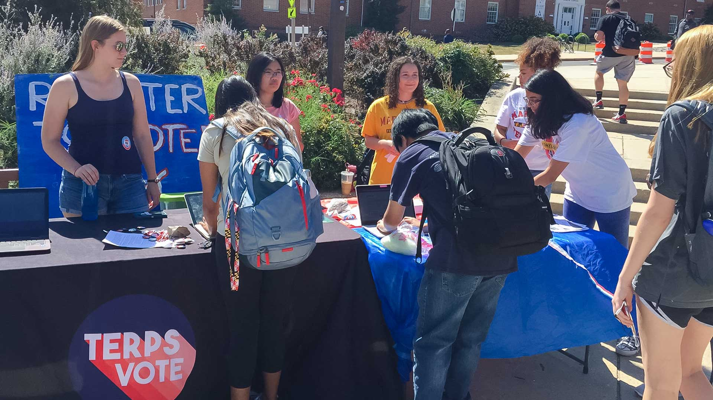
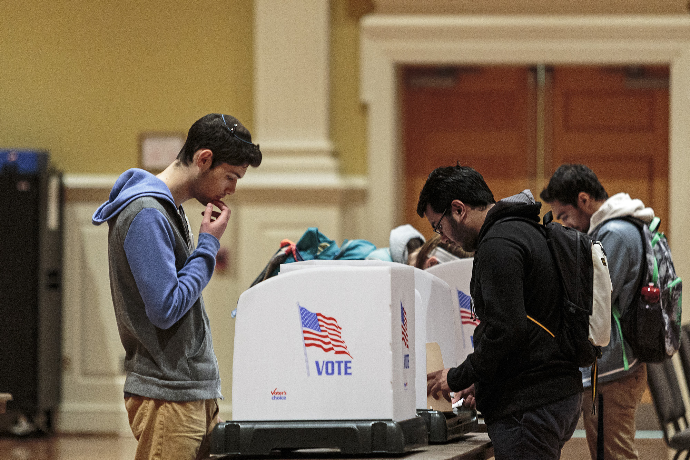

Many argue that the 2020 presidential election is the most highly anticipated political race in American history. To accurately predict the future of our democracy, we cannot neglect an important and previously overlooked demographic: college voters.
In last years midterm elections, University of Maryland’s students voting rate increased to 46 percent, from a rate of 19.3 percent in 2014, according to a campus report.
This matches the results found in a study done by the Institute for Democracy & Higher Education at Tufts University, which found an increase from 19.3 percent in 2014 to 40.3 percent in 2018. Based on these numbers, it is estimated at 7.5 million students voted in the 2018 midterm elections.
2014
2018
At the University of Maryland, the TerpsVote Coalition takes pride in this increase, and hopes to continue the rise of college students that vote in local, state, and national elections.
“They’re the face of the next generation. They’re the face of change.”
"Reaching a 46 percent student voting rate during a midterm election is a huge milestone, but we're already preparing for next fall’s presidential election,” said Patrick Saumell, Student Co-Chair for the TerpsVote Coalition.
One of the biggest issues college voter advocacy organizations face is voter apathy. When asked about how TerpsVote combats problems of voter apathy, Samuell said they key is in making voting relatable to everyone.
“To use an example, for students in science and mathematics, a lot of the research opportunities are tied to federal funding. So then we try to put it in terms of that so something that will directly impact them and show them how voting, can actually have a direct impact on things that they care about” Saumell said.
The University of Maryland has over 800 student groups on campus, constantly advertising their initiatives, so it's vital that TerpsVote has a strategy to ensure their marketing efforts stand out and reach students all across campus.
“I think it’s really powerful what they’re doing” sophomore government and politics major Rachel Jessee said. “They’re not too in the students faces. It’s a warm welcoming environment that encourages people to vote.”
The top majors at the University of Maryland are within the fields of science, mathematics, and technology, so it’s necessary for the TerpsVote Coalition to have a strategy to reach the students that may not feel personally invested in politics.
As the primaries for the Democratic nomination fast approaching, Terps Vote is utilizing campus marketing resources, orientation presentations, and speaking in introductory university courses to encourage students to register to vote as well as provide the tools so they can better understand the voting process.
“With the primary, there's lower voter turnout, so there’s a bigger chance for college aged voters to make a difference,” Saumell said.
Many students share the sentiment of optimism when looking ahead to the impact college voters will have on the 2020 election. “They’re the face of the next generation. They’re the face of change” Hannah Wood, junior government and politics major said.
TerpsVote announced that college voter turnout was 60 percent in the last presidential election. Following the trend of college voter increase, their goal is to have a turnout between 75 and 80 percent, Saumell said.